The 8 examples
Eight zones were run from start to finish with the current code, each chosen because it tests something different: a long arc, a huge one, a tiny one, a very flat one, one PTHA18 extended by hand, and three that PTHA18 never modelled with this geometry. For each one this page gives the command, what makes it interesting, its figures, its map and its numbers next to PTHA18's.
*_v9), all unsegmented, each with its official step 8 where PTHA18 published the zone. Two of them also have a segmented twin, kermadectonga2_v9seg and kurilsjapan_v9seg, described with their numbers in Segmented vs unsegmented. Against v8's folders (*_v8) only steps 6 onwards can differ: v9 takes a zone's coupling from Berryman's "Whole margin" row where there is one, and its Mw max observed as the larger of Berryman's rows and the GCMT maximum, as PTHA18 did. That moved kermadectonga2, southamerica and puysegur2; kurilsjapan changed too, because it is now run with --auto-clip; makran2, calabria2, caribbean2 and antilles2 give v8's numbers.--ptha false --discretizer optimal, so nothing is taken from PTHA18's mesh, and run with step_total.py --skip-hs. The numbers come from each folder's own files: run_final.log, outputs/, outputs_official/ and data/step1_contours_info.json. The script that collects them is html/docs/figures_src/make_examples.py.All 8 at a glance
calabria2_v10, calabria2_v10_q, caribbean2_v10, caribbean2_v10_q (all with --rupture-size local, generated before the trench ramp rule existed, so with v9's trench) and hellenic_west2_v10_q (ramp rule and --rupture-size local). Commands and results: What is new in v10 and v10_q.--rupture-size local, constant rigidity): calabria2_v11, caribbean2_v11, kermadectonga2_v11, kurilsjapan_v11; with --variable-mu on: calabria2_v11_varmu (v11). With v12, --mesh-file: alaskaaleutians_v12 (colleagues' mesh, which is PTHA18's own) and alaskaaleutians_v12_slab (the same zone from SLAB, to compare) (v12).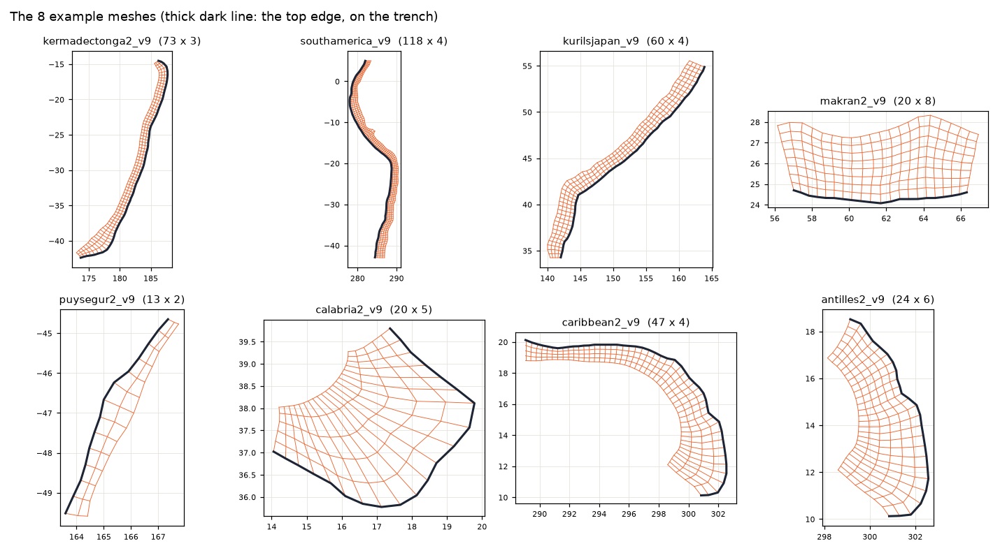
unit_source_grid.npy. Each panel has its own scale (the zones range from 630 km to 5,900 km of trench). The thick dark line is the top edge of the mesh, which lies on the trench; the plate sinks away from it. Title: folder, then columns along the trench x rows down the slope.| Folder | Mesh | Area, km2 | Mean dip | Convergence, mm/yr | GCMT events | Rate Mw 7.2+, per yr | Ends |
|---|---|---|---|---|---|---|---|
| kermadectonga2_v9 | 73 x 3 | 542,559 (511,220) | 15.42 (16.01) | 99.36 (98.77) | 9 (9) | 0.225 (0.225) | both cut |
| southamerica_v9 | 118 x 4 | 1,163,678 (1,681,297) | 16.62 (15.88) | 72.59 (58.71) | 24 (25) | 0.520 (0.573) | south cut |
| kurilsjapan_v9 | 60 x 4 | 593,269 (594,621) | 16.33 (16.68) | 87.91 (87.72) | 21 (21) | 0.462 (0.465) | south clipped (--auto-clip) |
| makran2_v9 | 20 x 8 | 382,203 (383,274) | 6.06 (6.10) | 41.06 (41.06) | 0 (0) | 0.0413 (0.0419) | both kept |
| puysegur2_v9 | 13 x 2 | 43,468 (46,853) | 36.63 (36.18) | 25.60 (35, fixed) | 4 (4) | 0.0639 (0.0808) | south cut |
| calabria2_v9 | 20 x 5 | 136,468 | 14.95 | 7.93 | 0 | 0.0174 | both cut |
| caribbean2_v9 | 47 x 4 | 399,747 | 15.44 | 15.65 | 0 | 0.0277 | south cut |
| antilles2_v9 | 24 x 6 | 249,217 | 9.31 | 18.50 | 0 | 0.0265 | both cut |
In brackets: PTHA18's official value, from step 8 (the official input run through the same engine). The last three zones have no official run: PTHA18 does not publish a unit-source grid for them on NCI. Mesh = columns along the trench x rows down the slope. All eight meshes are rptha's own mesh, kept unchanged by optimal (0 folded, 0 collapsed, 0% overlapping cells). "Rate Mw 7.2+" is the mean rate of earthquakes of magnitude 7.2 or more, per year.
kermadectonga2: the main running example
.venv/Scripts/python.exe from_scratch_v12/generate.py kermadec --zone kermadectonga2 --folder kermadectonga2_v9 --ptha false --discretizer optimal
Why it is interesting. 3,600 km of trench from Tonga to New Zealand's South Island, crossing the 180 deg meridian. SLAB2.0 ends it crookedly in the north and tapers it to a point in the south, which is what made the automatic mesh differ most from PTHA18's hand-edited one without step 1's clean ends.
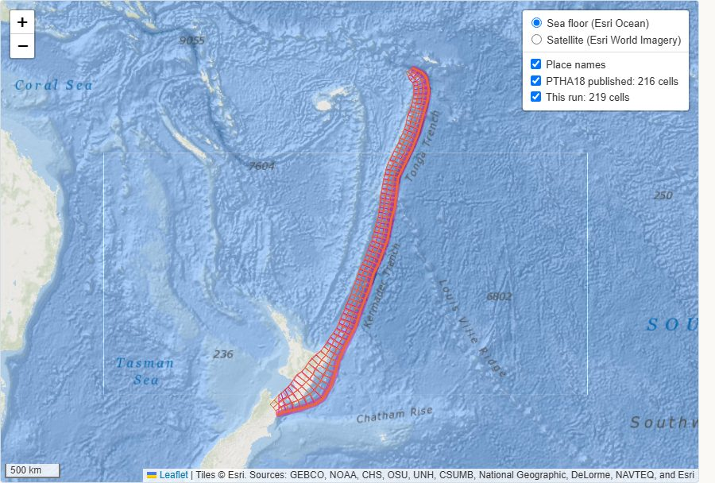
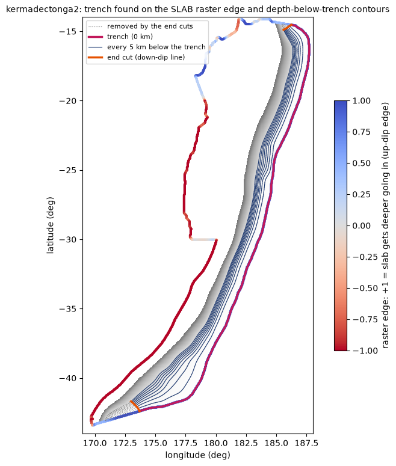
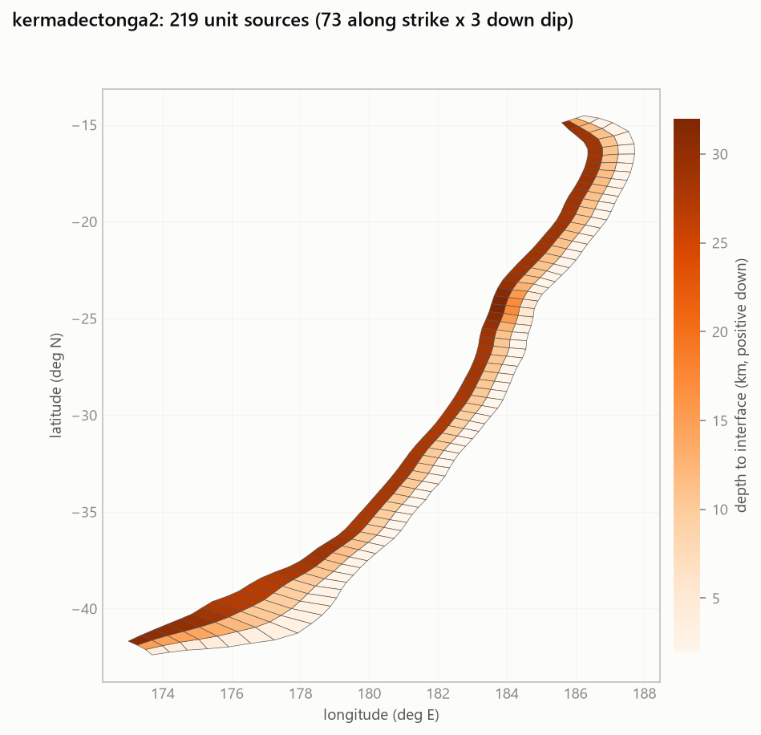
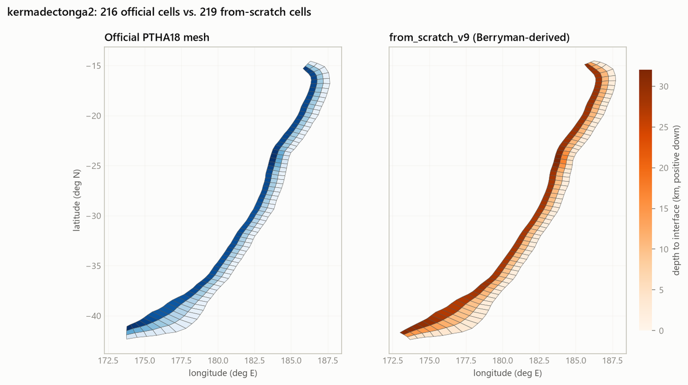
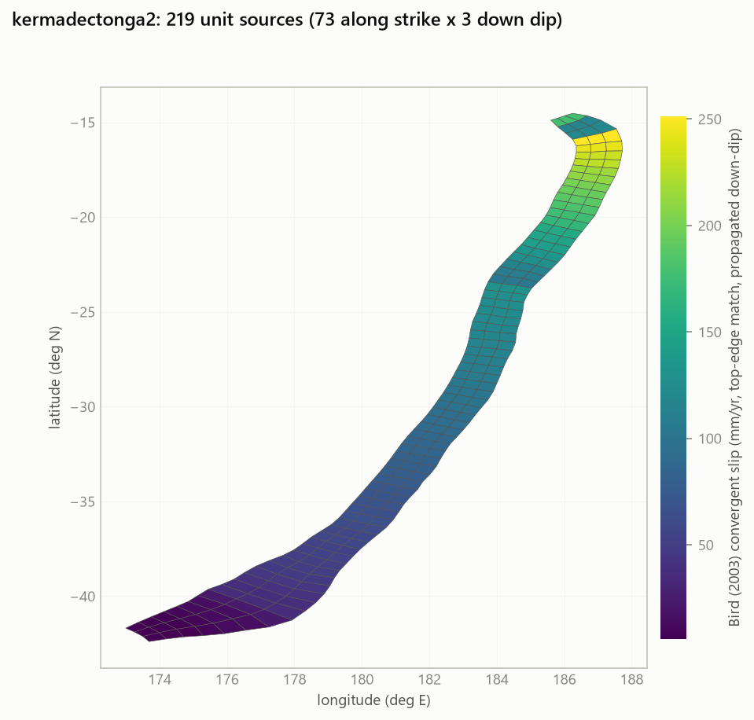
| Quantity | This run | PTHA18 | Gap |
|---|---|---|---|
| Cells | 219 | 216 | +3 |
| Area, km2 | 542,559 | 511,220 | +6.1% |
| Mean dip, deg | 15.42 | 16.01 | -0.59 |
| Convergence, mm/yr | 99.36 | 98.77 | +0.6% |
| Edge multiplier (LEVEL 4) | 7.15 | 6.70 | +6.8% |
| Rate Mw 7.2+, /yr | 0.2251 | 0.2246 | +0.2% |
| Rate Mw 8.0+, /yr | 0.0402 | 0.0398 | +1.3% |
| Rate Mw 9.0+, /yr | 0.00285 | 0.00259 | +10.1% |
| End | Step 1's decision |
|---|---|
| South (trench start) | narrows to 34% of its median width: cut where it is back to 70%; 195 km of trench and 247 km of the deepest contour removed |
| North (trench end) | 77 deg off square: cut along the down-dip line from the trench's last point; 5 km of trench, 53 km of contour removed |
Both cuts land within 10 km of PTHA18's own hand-made ends. 9 GCMT events, as PTHA18. The coupling (0.21 / 0.31 / 0.72) and Mw max observed (8.1) are PTHA18's own, so the remaining gap is the mesh and, through it, the LEVEL 4 edge fit (7% higher), which depends on where the column boundaries fall. Segmented twin: kermadectonga2_v9seg (numbers). | |
southamerica: the biggest zone
.venv/Scripts/python.exe from_scratch_v12/generate.py "south america" --zone southamerica --folder southamerica_v9 --ptha false --discretizer optimal
Why it is interesting. The longest zone (5,900 km of trench, 472 cells) and a SLAB1.0 zone (its name does not end in 2). Its raw south end is crooked (78 deg off square): without the end cut, rptha's mesh there has a folded cell (the repair demonstration); with it, rptha's own mesh has no defect.
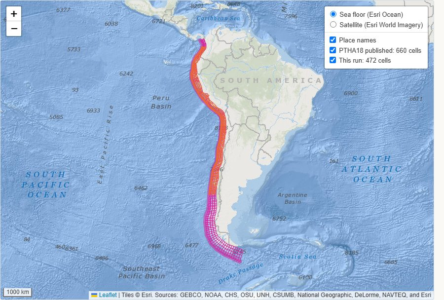
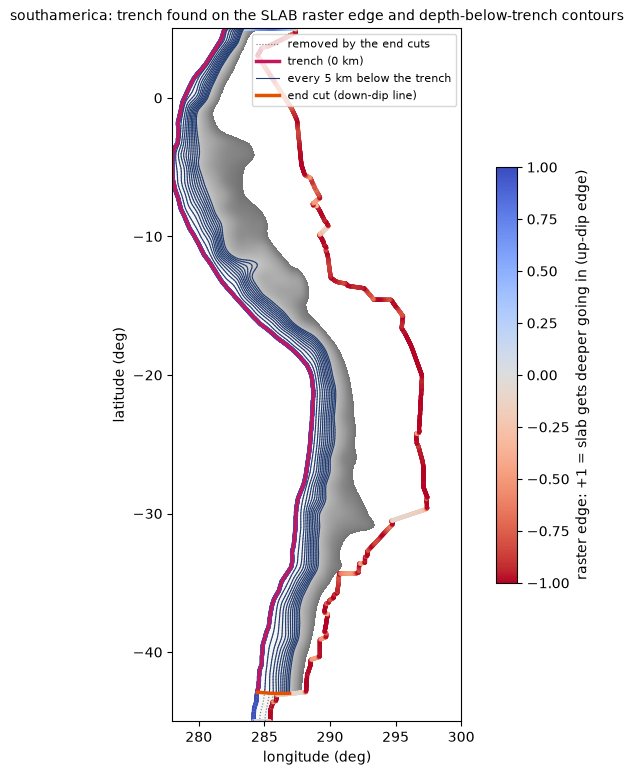
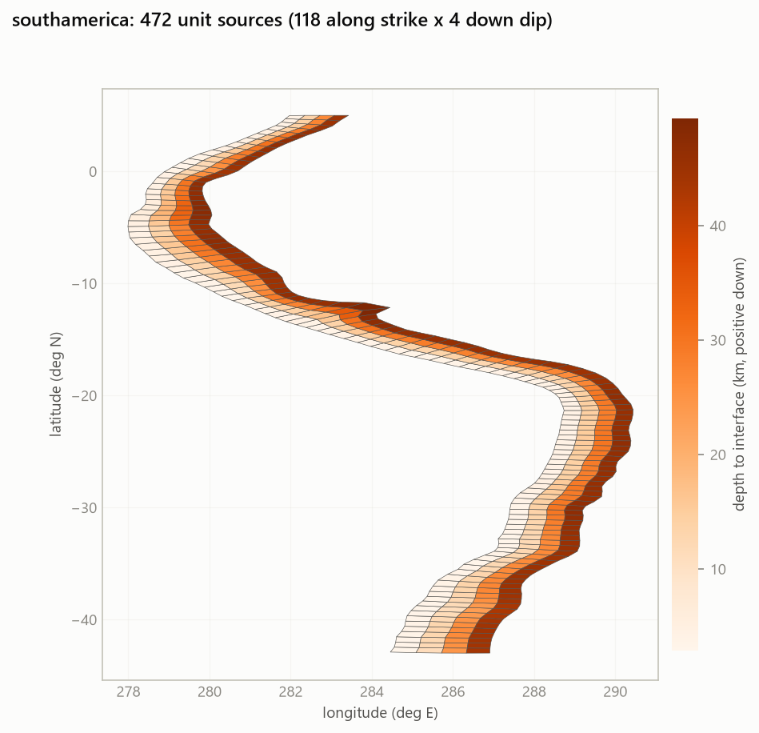
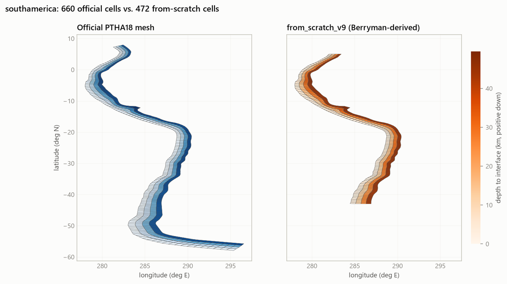
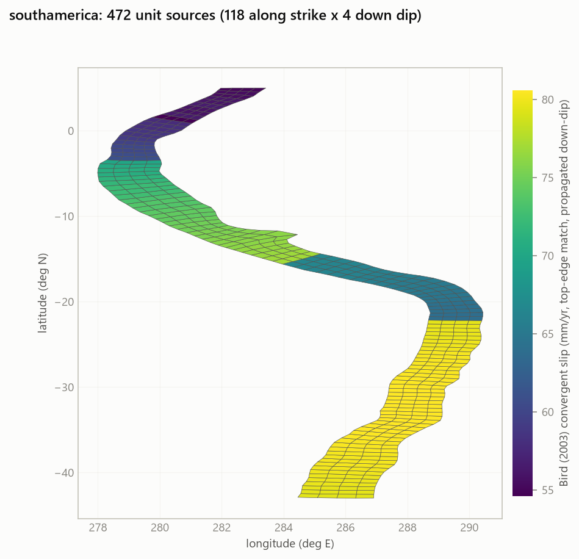
| Quantity | This run | PTHA18 | Gap |
|---|---|---|---|
| Latitude covered | 5.0 N to 43.0 S | 7.7 N to 57.6 S | |
| Area, km2 | 1,163,678 | 1,681,297 | -30.8% |
| Mean dip, deg | 16.62 | 15.88 | +0.74 |
| Convergence, mm/yr | 72.59 | 58.71 | +23.6% |
| GCMT events | 24 | 25 | |
| Rate Mw 7.2+ / 8.0+ / 9.0+, /yr | 0.520 / 0.114 / 0.0134 | 0.573 / 0.125 / 0.0145 | -9.2% / -9.2% / -8.1% |
kurilsjapan: cutting the tail with --auto-clip
.venv/Scripts/python.exe from_scratch_v12/generate.py kuril --zone kurilsjapan --folder kurilsjapan_v9 --ptha false --discretizer optimal
# steps 1-3 once, so step 3 can flag the tail; then the full run with the cut
.venv/Scripts/python.exe kurilsjapan_v9/steps/step1_fetch_slab2.py
.venv/Scripts/python.exe kurilsjapan_v9/steps/step2_build_grid.py
.venv/Scripts/python.exe kurilsjapan_v9/steps/step3_convergence.py
.venv/Scripts/python.exe kurilsjapan_v9/steps/step_total.py --skip-hs --auto-clipWhy it is interesting. The SLAB2.0 region runs south past the Boso triple junction onto the Izu-Bonin trench, another plate boundary. Step 3's plate-boundary check flags those columns, and --auto-clip cuts them with a window derived from the mesh, no coordinates typed. The result, 60 x 4 cells, has PTHA18's area to 0.2% and its Mw 7.2+ rate to 0.6%. Without the cut (v8's kurilsjapan_v8, 65 x 4) the mesh was 6% larger. Segmented twin: kurilsjapan_v9seg (numbers).
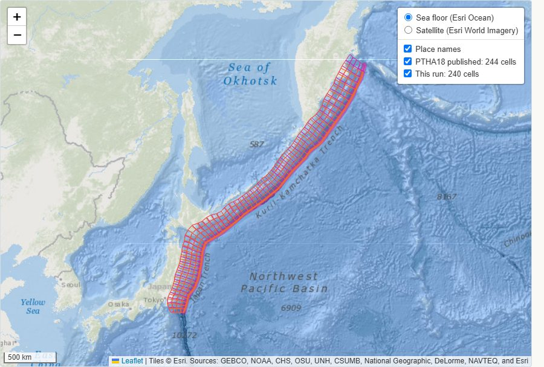
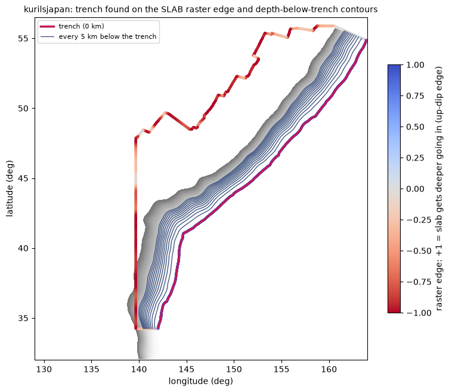
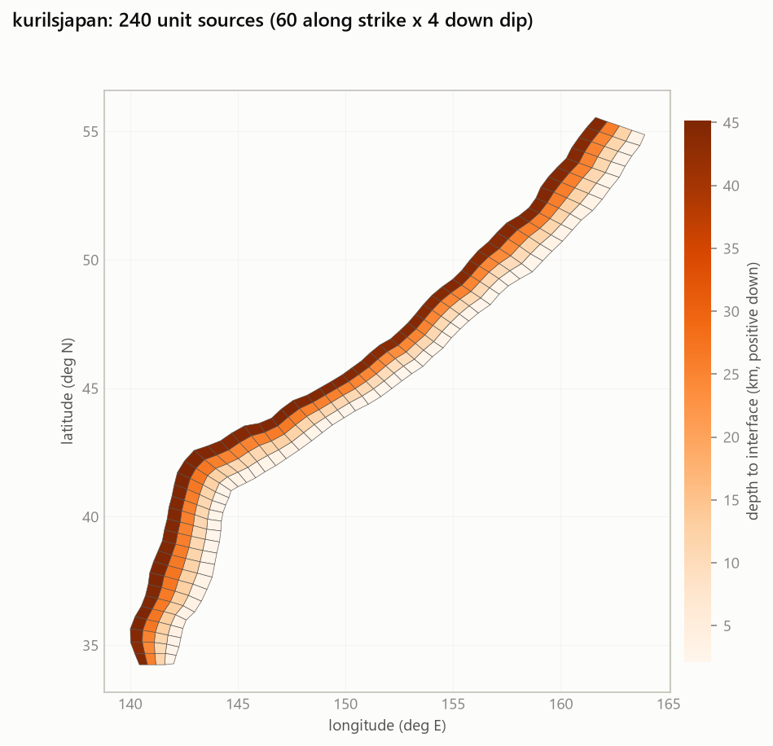
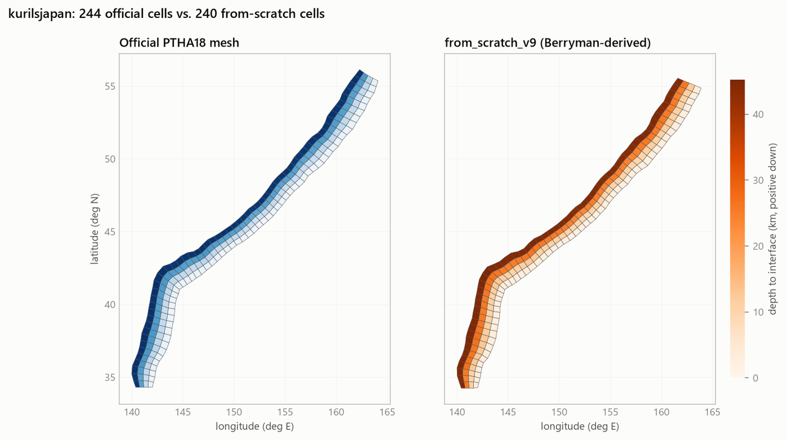
| Quantity | This run | PTHA18 | Gap |
|---|---|---|---|
| Area, km2 | 593,269 | 594,621 | -0.2% |
| Mean dip, deg | 16.33 | 16.68 | -0.35 |
| Convergence, mm/yr | 87.91 | 87.72 | +0.2% |
| GCMT events | 21 | 21 | |
| Rate Mw 7.2+ / 8.0+ / 9.0+, /yr | 0.462 / 0.0859 / 0.00761 | 0.465 / 0.0850 / 0.00749 | -0.6% / +1.1% / +1.6% |
makran2: a very flat interface
.venv/Scripts/python.exe from_scratch_v12/generate.py makran --zone makran2 --folder makran2_v9 --ptha false --discretizer optimal
Why it is interesting. The plate sinks at only 6 deg, so the zone is very wide (8 rows of cells) for a short trench, and a large part of the mesh lies under land (Iran and Pakistan). Both ends are slanted (33 and 25 deg off square) but within the range PTHA18 itself kept, so step 1 keeps them. Area matches PTHA18 to 0.3% and the Mw 7.2+ rate to 1.3%.
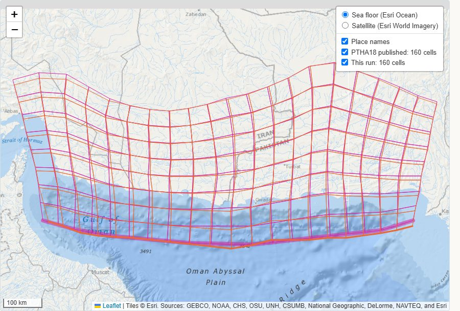
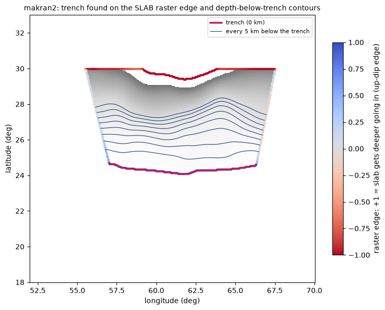
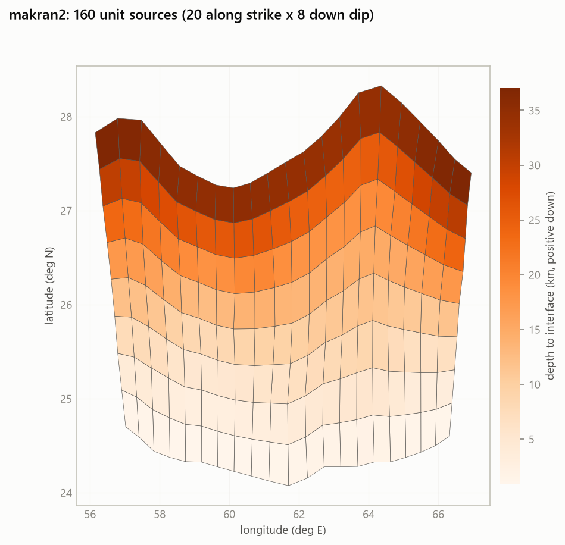
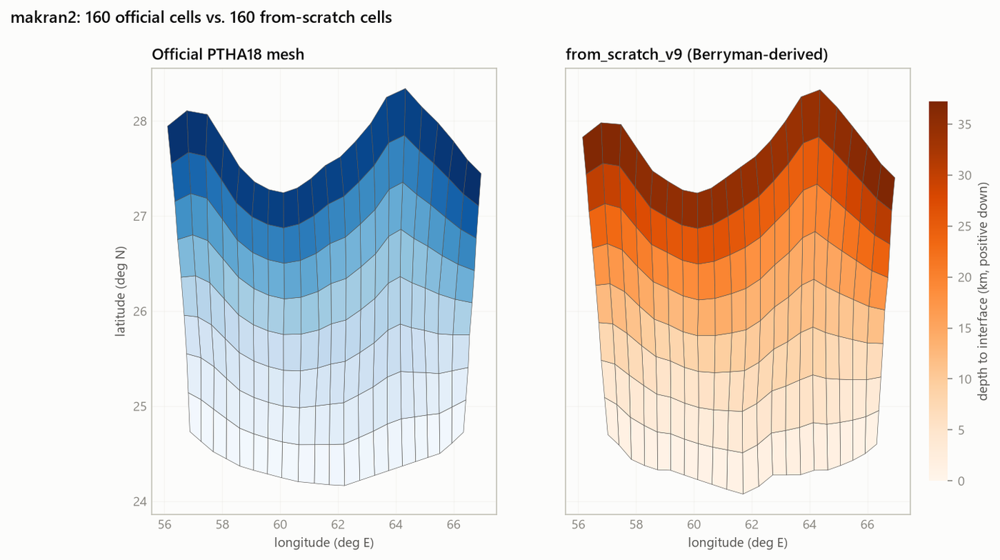
| Quantity | This run | PTHA18 | Gap |
|---|---|---|---|
| Area, km2 | 382,203 | 383,274 | -0.3% |
| Mean dip, deg | 6.06 | 6.10 | -0.04 |
| Convergence, mm/yr | 41.06 | 41.06 | 0.0% |
| GCMT events | 0 | 0 | |
| Rate Mw 7.2+ / 8.0+ / 9.0+, /yr | 0.0413 / 0.00864 / 0.000979 | 0.0419 / 0.00865 / 0.000967 | -1.3% / -0.2% / +1.2% |
puysegur2: tiny, steep, and extended by hand
.venv/Scripts/python.exe from_scratch_v12/generate.py puysegur --zone puysegur2 --folder puysegur2_v9 --ptha false --discretizer optimal
Why it is interesting. The smallest zone (26 cells) and the steepest (36 deg). Two things make it differ from PTHA18 on purpose: PTHA18 extended its south end by hand beyond the SLAB2.0 data (this package does not invent geometry: its south end, 53 deg off square, is cut to 13 deg), and PTHA18 used a fixed convergence of 35 mm/yr here instead of Bird's model, which gives 25.6 mm/yr on this mesh.
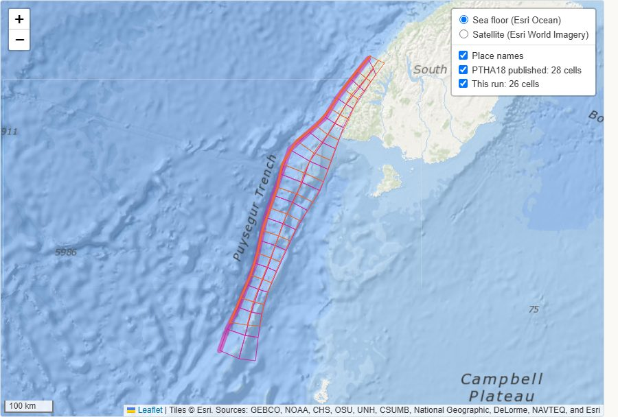
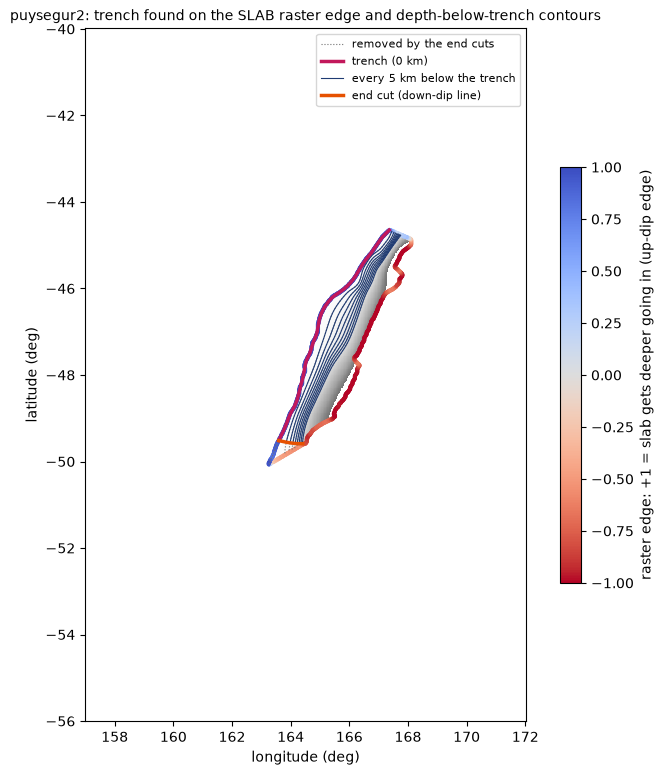
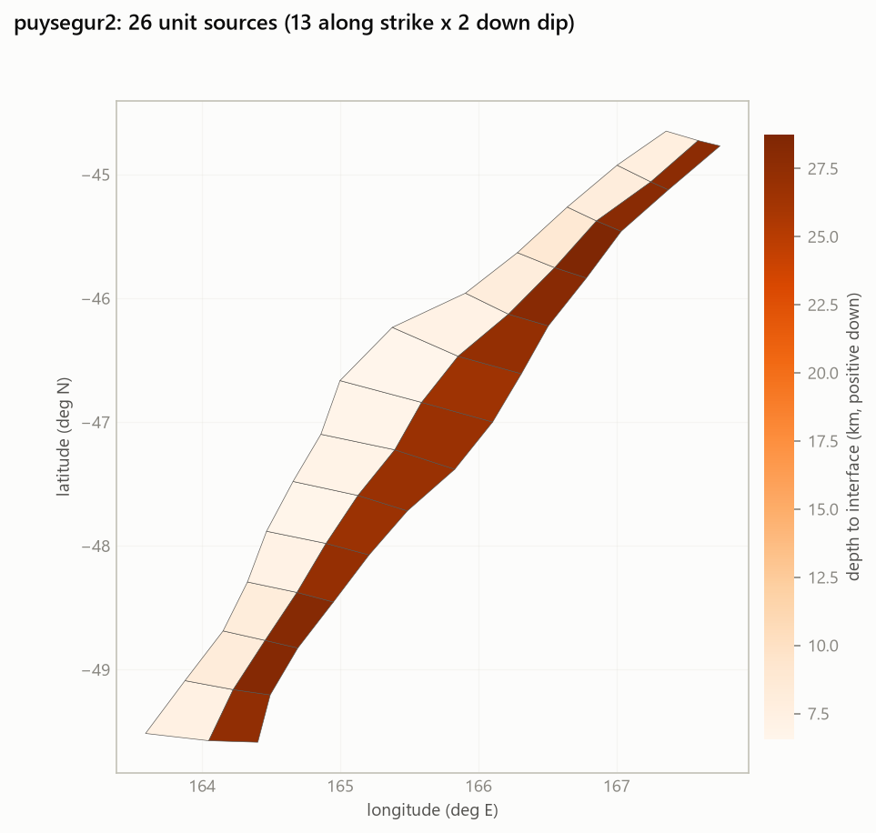
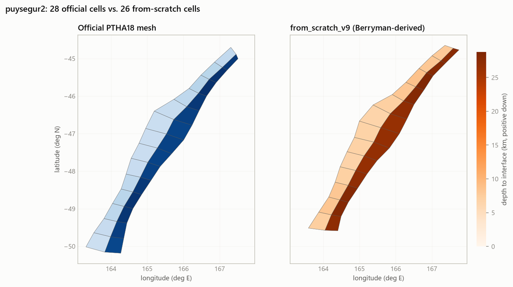
| Quantity | This run | PTHA18 | Gap |
|---|---|---|---|
| Cells | 26 | 28 | -2 |
| Area, km2 | 43,468 | 46,853 | -7.2% |
| Mean dip, deg | 36.63 | 36.18 | +0.45 |
| Convergence, mm/yr | 25.60 (Bird) | 35 (fixed) | -26.9% |
| GCMT events | 4 | 4 | |
| Rate Mw 7.2+ / 8.0+, /yr | 0.0639 / 0.00328 | 0.0808 / 0.00516 | -21.0% / -36.4% |
CONVERGENCE_OVERRIDE_MM_PER_YR = 35 in steps/step3_convergence.py and re-run step 3, step 6 with --force, then steps 7 and 9: step 3 then writes the constant and step 6 switches to PTHA18's constant-rate model. See puysegur's convergence.calabria2: a strongly curved trench
.venv/Scripts/python.exe from_scratch_v12/generate.py calabria --zone calabria2 --folder calabria2_v9 --ptha false --discretizer optimal
Why it is interesting. The Calabrian arc in the Ionian Sea bends through almost 180 deg around a large, flat, noisy accretionary prism, and the SLAB2.0 data ends crookedly in the west (82 deg off square) and narrows to a point in the north-east (43% of its median width). It is the hardest case for step 1; the result is 20 x 5 cells with no broken cell. PTHA18 has no official run to compare.
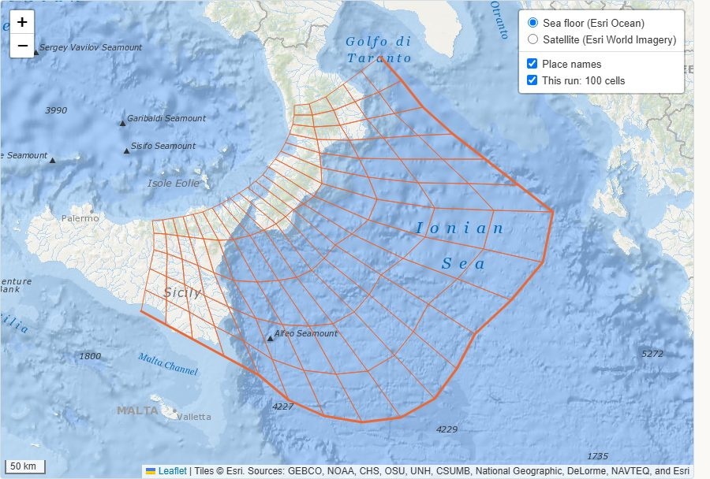
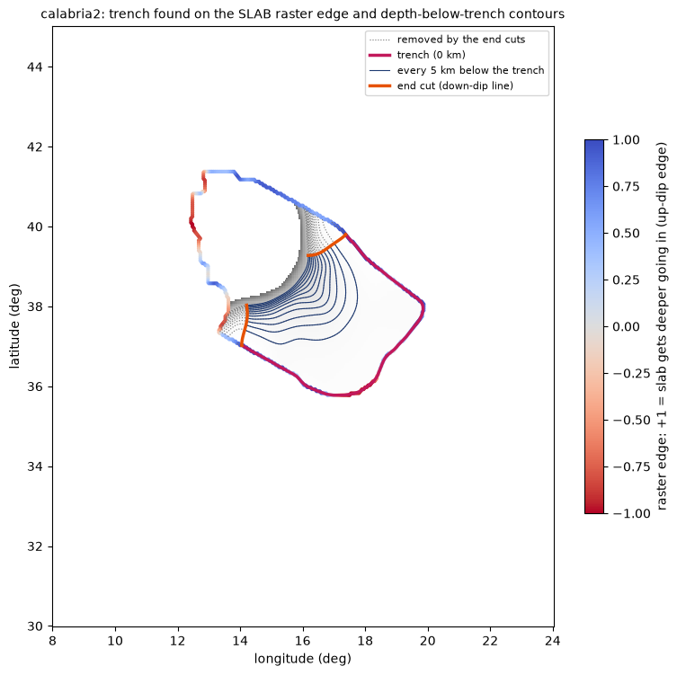
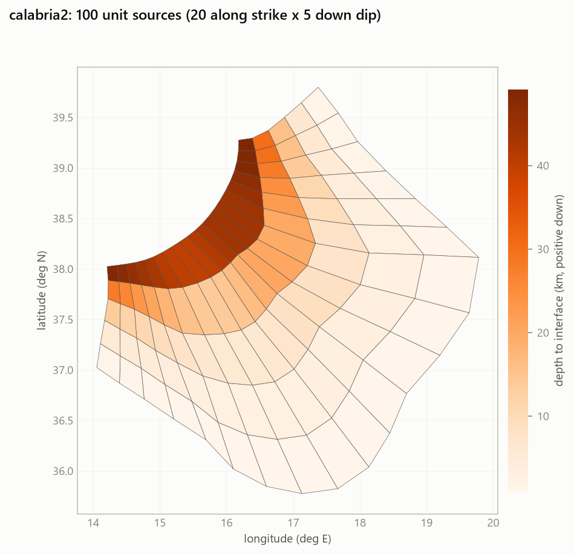
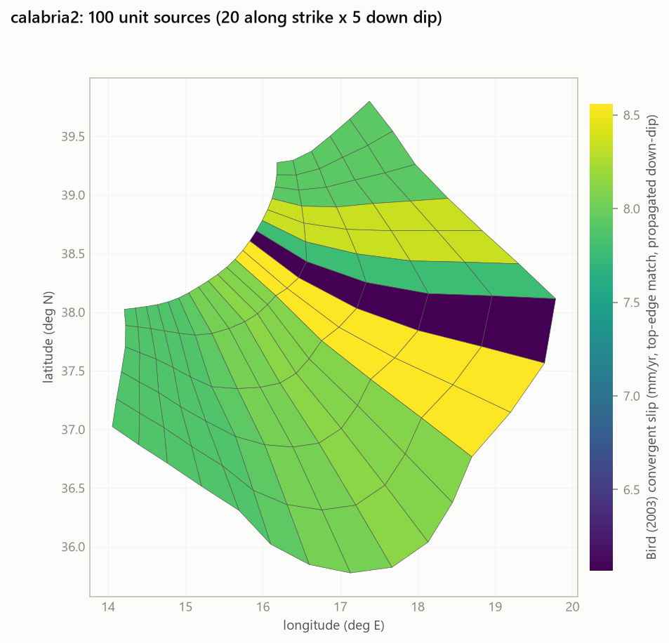
| End | Step 1's decision |
|---|---|
| West (trench start) | 82 deg off square: cut; 15 km of trench, 89 km of the deepest contour removed |
| North-east (trench end) | narrows to 43% of its median width: cut where it is back to 70%; 55 km of trench, 135 km of contour removed |
Area 136,468 km2, mean dip 14.95 deg, convergence 7.93 mm/yr, 0 GCMT events, rate of Mw 7.2+ 0.0174 per year.
caribbean2: the whole Caribbean raster
.venv/Scripts/python.exe from_scratch_v12/generate.py caribbean --zone antilles2 --folder caribbean2_v9 --ptha false --discretizer optimal
Why it is interesting. The SLAB2.0 "Caribbean" region covers more than one subduction zone. Without a clip window, step 1 takes the longest trench-like edge of the raster (2,300 km, from the Lesser Antilles along Puerto Rico and Hispaniola). This is a test of how the automatic trench finder behaves on a raster that is not one zone; compare with antilles2, the same raster clipped to the Lesser Antilles. No official run to compare.
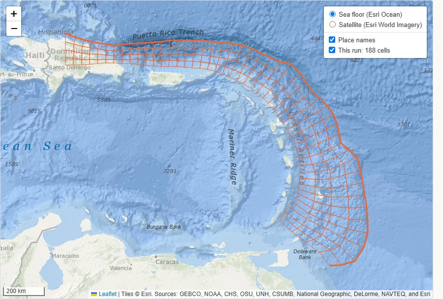
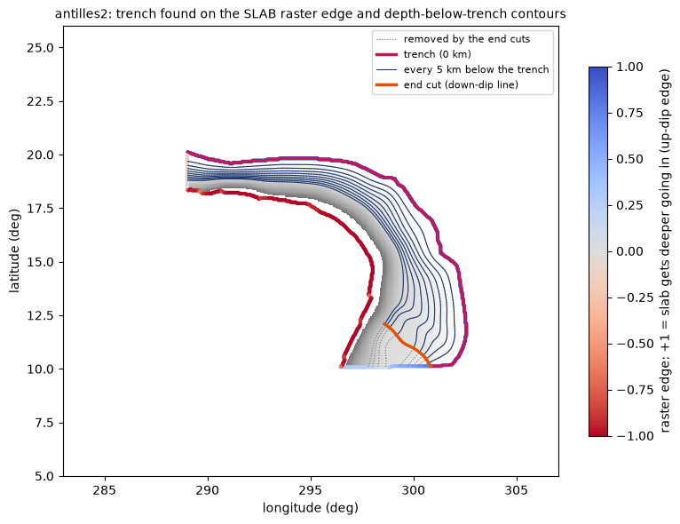
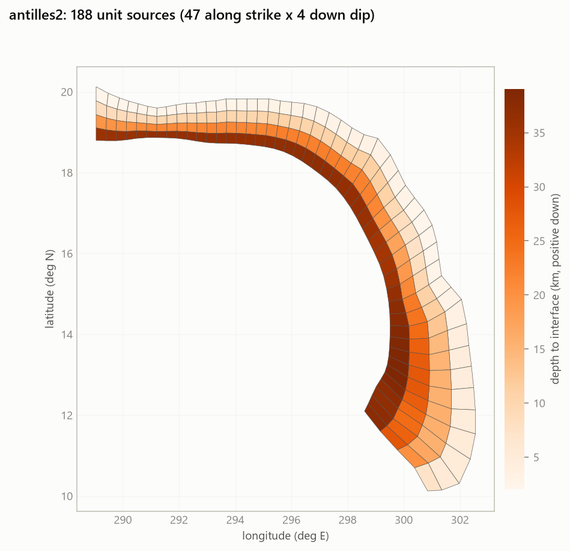
Area 399,747 km2, mean dip 15.44 deg, convergence 15.65 mm/yr, 0 GCMT events, rate of Mw 7.2+ 0.0277 per year. South end (trench start): 86 deg off square, cut along the down-dip line from the trench's last point (242 km of the deepest contour removed). West end: kept.
antilles2: using --clip
.venv/Scripts/python.exe from_scratch_v12/generate.py caribbean --zone antilles2 --folder antilles2_v9 --ptha false --discretizer optimal --clip 297,307,5,18.5
Why it is interesting. The Lesser Antilles arc alone, cut out of the Caribbean raster with --clip LON_MIN,LON_MAX,LAT_MIN,LAT_MAX (longitudes in the raster's 0-360 convention). The clip window's corner makes the south end crooked (85 deg off square) and the north end narrows where the arc meets the window (46%), so both are cut. The flat dip (9.3 deg) gives 6 rows. No official run to compare.
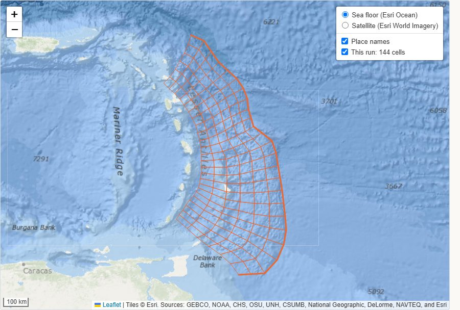
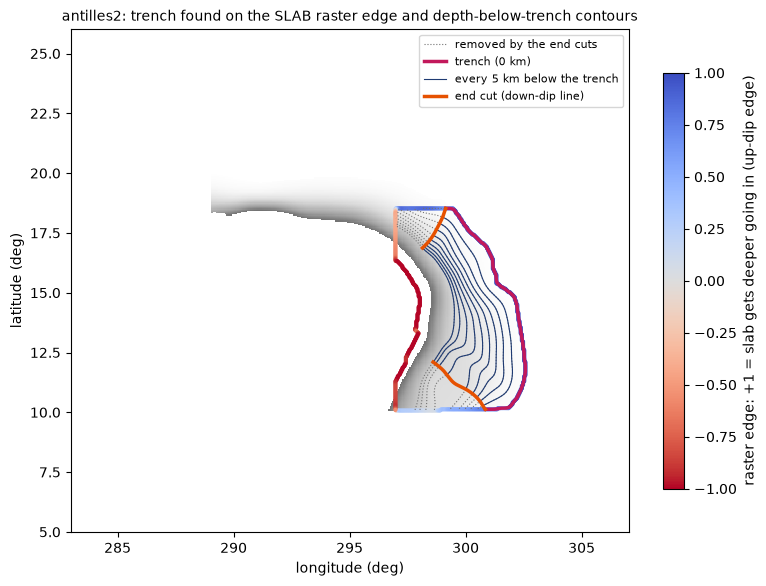
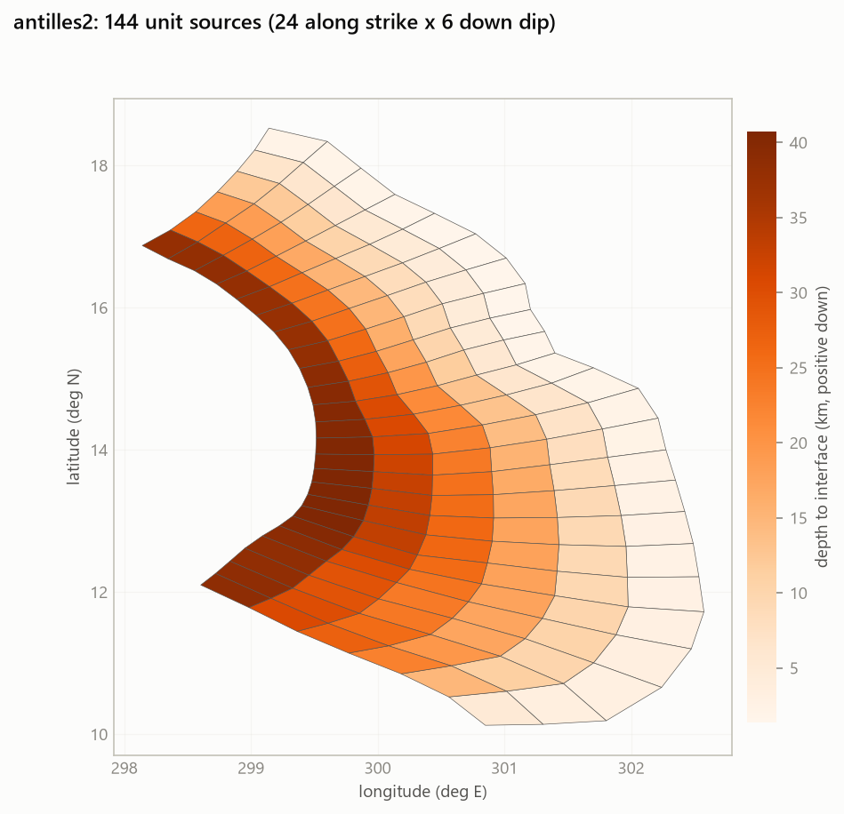
Area 249,217 km2, mean dip 9.31 deg, convergence 18.50 mm/yr, 0 GCMT events, rate of Mw 7.2+ 0.0265 per year. South end: cut (242 km of the deepest contour). North end: cut where the zone is back to 70% of its width (105 km of trench, 203 km of contour).
--clip 283,307,5,18.5 keeps a strip of the Puerto Rico slab and no check flags it. See --clip.